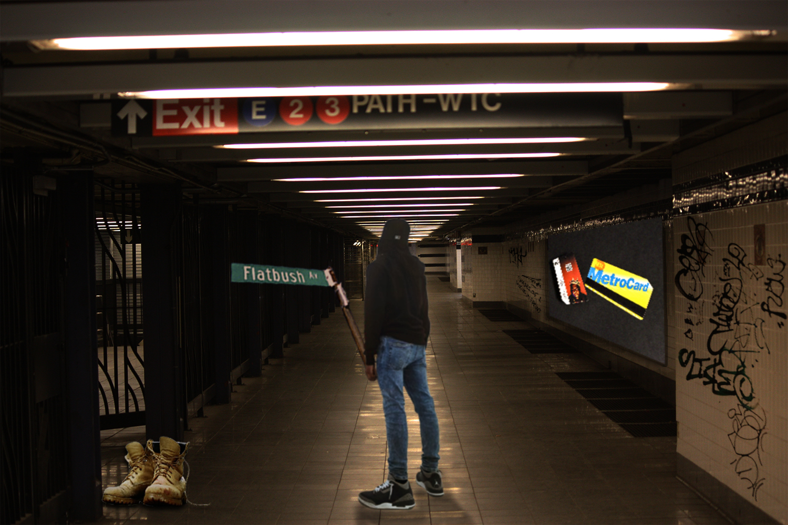
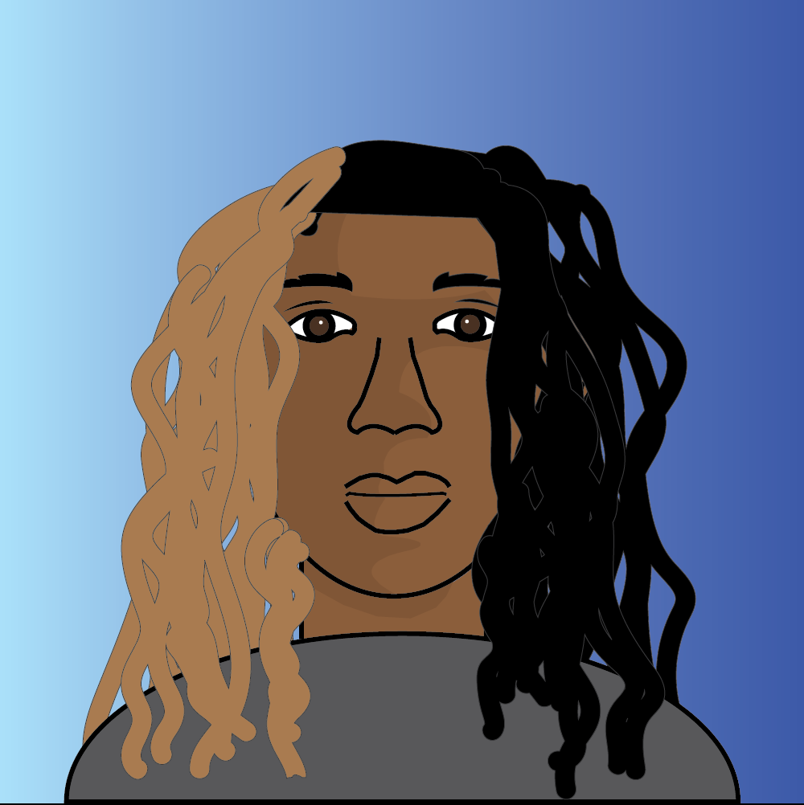

Images
Raster Image Project
For this project, I chose to represent myself and my NYC identity. I first started by having the background be set in a subway station, and combined four images in the foreground; myself, a Biggie Smalls metrocard (I am a pretty big fan of him, and he is a staple in NYC), a Flatbush Ave street sign (the street that I have lived by all my life, made myself hold the sign like a flag), and a pair of Timberland boots (a staple in NYC, I have a couple of pairs myself). These images represent the culture that NYC has to offer, and I wanted to make it show how it is a part of my identity. This was done with Adobe Photoshop.
Vector Image Project
For this project, I used geometric shapes and colors to reflect me and my personality. I chose the color blue for my background and the color grey for my shirt color because I wanted to represent a calm, laid-back vibe for myself. Grey is also a neutral color, so it would help to keep the focus on my subject. My main inspiration for this project came from tutorials that I found of people making celebrities in Illustrator, but I was able to customize everything the way that I wanted it. This was done with Adobe Illustrator.
